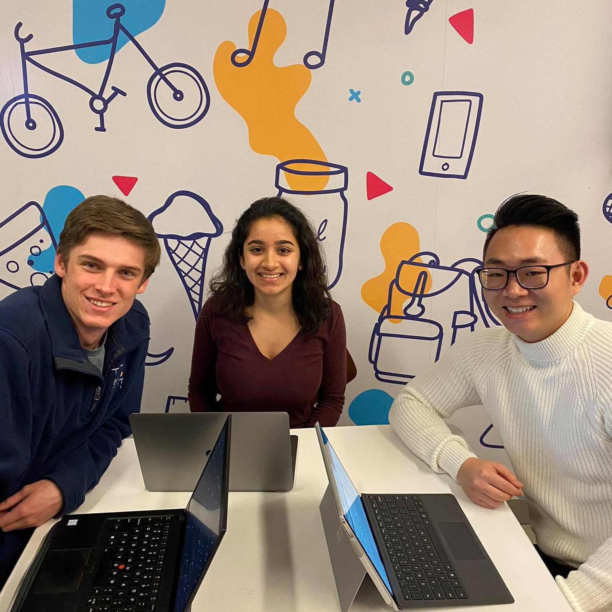
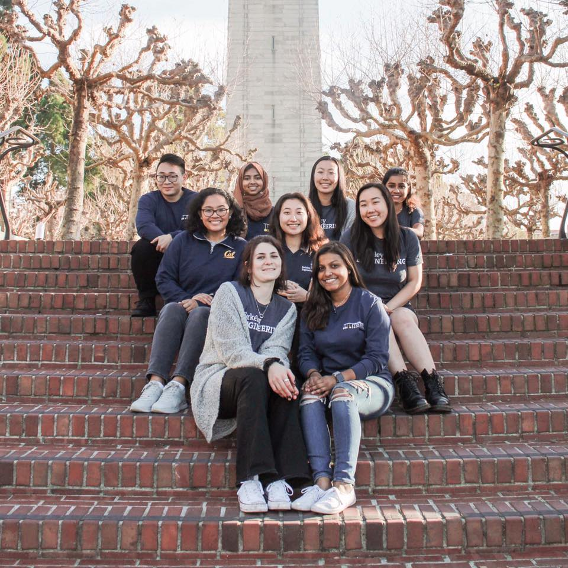

External Vice President (EVP) Committee
The external vice president's committee mostly handles projects that include affiliates of the college as opposed to organizations registered under the ESC. Past projects include but are not limited to the FMPI and establishing Communications and Partnerships within the UC and CSU system schools in addition to assisting with ESC wide events.
Finance Committee (FiComm)
Finance Committee handles the disbursement of funds for ESC-affiliated organizations through the Initial Allocations Application and FiComm meetings.
Internal Vice President (IVP) Committee
The internal vice president’s committee centers around advocating and supporting student organizations and the student body. In addition, the committee works to improve relationships between Berkeley Engineering Departments and students, focusing especially on initiatives involving equity, diversity, and inclusion.
Communications Committee
The communications committee is responsible for handling social media engagement for marketing and maintaining relations with the ESS, CoE and clubs affiliated with ESC. Along with this, the committee is also responsible for doing photography, videography and graphic designing for all events. Moreover, The members are involved in unique projects, some of which include:
Engineers Week Committee
Engineers Week Committee plans one of the biggest College of Engineering events. Primarily, the committee is tasked with working with ESC's corporate sponsors, partnering with ESC-affiliated organizations, and working with the College of Engineering to host this weeklong event. Some of the events planned by the EWeek Committee for 2020 were Engineers Ball and Engineering 4 Kids Day
The Internal Affairs Committee
The Internal Affairs Committee fosters community in ESC through social events, fun activities and organizing internal events. It also implements methods to promote participation in ESC General Meetings, Executive Meetings and ESC Socials